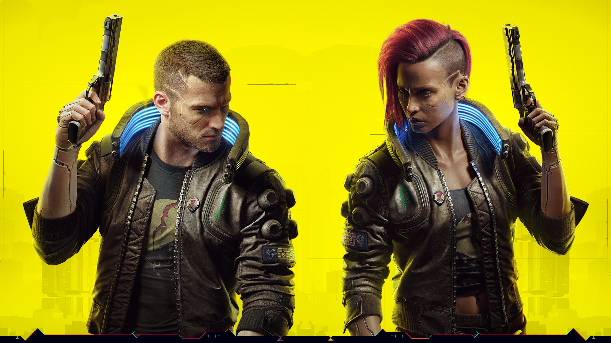

Hola esta es una pagina web dedicada al videojuego Cyberpunk 2077, si no sabes que es o de que se trata Cyberpunk, no te precupes estas en la pagina indicada.
Cyberpunk 2077 es un videojuego desarrollado y publicado por CD Projekt, que se lanzó para Microsoft Windows, PlayStation 4, y Xbox One el 10 de diciembre de 2020, y posteriormente en PlayStation 5, Xbox Series X|S y Google Stadia. Adaptado del juego de rol Cyberpunk 2020, se establece cincuenta y siete años más tarde en la ciudad distópica de Night City, California. Es un mundo abierto con seis distritos diferentes, con una perspectiva de primera persona y los jugadores asumen el papel del personaje personalizable llamado V, quienes pueden mejorar sus estadísticas con experiencia. V tiene un arsenal de armas y opciones para combate cuerpo a cuerpo, los cuales pueden ser modificados.

Si desea saber mas de este juego puede explorar mas la pagina al dirigirse al menu que esta arriba.